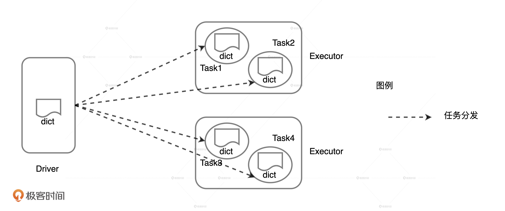
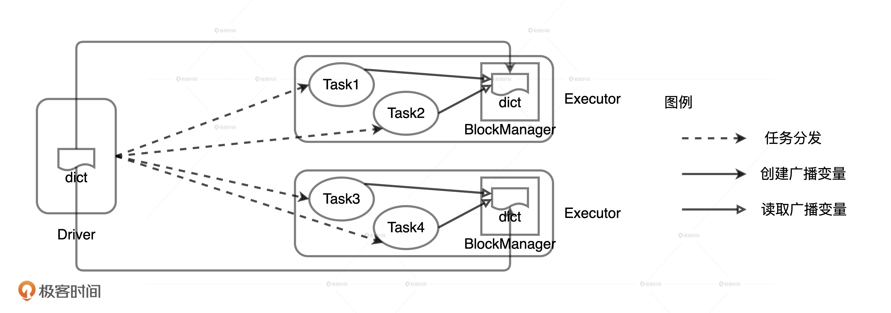
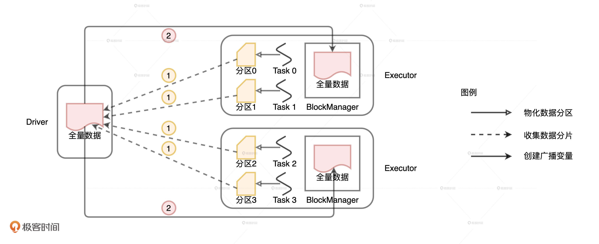

- 00 开篇词 Spark性能调优，你该掌握这些“套路”.md.html
- 01 性能调优的必要性：Spark本身就很快，为啥还需要我调优？.md.html
- 02 性能调优的本质：调优的手段五花八门，该从哪里入手？.md.html
- 03 RDD：为什么你必须要理解弹性分布式数据集？.md.html
- 04 DAG与流水线：到底啥叫“内存计算”？.md.html
- 05 调度系统：“数据不动代码动”到底是什么意思？.md.html
- 06 存储系统：空间换时间，还是时间换空间？.md.html
- 07 内存管理基础：Spark如何高效利用有限的内存空间？.md.html
- 08 应用开发三原则：如何拓展自己的开发边界？.md.html
- 09 调优一筹莫展，配置项速查手册让你事半功倍！（上）.md.html
- 10 调优一筹莫展，配置项速查手册让你事半功倍！（下）.md.html
- 11 为什么说Shuffle是一时无两的性能杀手？.md.html
- 12 广播变量（一）：克制Shuffle，如何一招制胜！.md.html
- 13 广播变量（二）：如何让Spark SQL选择Broadcast Joins？.md.html
- 14 CPU视角：如何高效地利用CPU？.md.html
- 15 内存视角（一）：如何最大化内存的使用效率？.md.html
- 16 内存视角（二）：如何有效避免Cache滥用？.md.html
- 17 内存视角（三）：OOM都是谁的锅？怎么破？.md.html
- 18 磁盘视角：如果内存无限大，磁盘还有用武之地吗？.md.html
- 19 网络视角：如何有效降低网络开销？.md.html
- 20 RDD和DataFrame：既生瑜，何生亮？.md.html
- 21 Catalyst逻辑计划：你的SQL语句是怎么被优化的？（上）.md.html
- 22 Catalyst物理计划：你的SQL语句是怎么被优化的（下）？.md.html
- 23 钨丝计划：Tungsten给开发者带来了哪些福报？.md.html
- 24 Spark 3.0（一）：AQE的3个特性怎么才能用好？.md.html
- 25 Spark 3.0（二）：DPP特性该怎么用？.md.html
- 26 Join Hints指南：不同场景下，如何选择Join策略？.md.html
- 27 大表Join小表：广播变量容不下小表怎么办？.md.html
- 28 大表Join大表（一）：什么是“分而治之”的调优思路？.md.html
- 29 大表Join大表（二）：什么是负隅顽抗的调优思路？.md.html
- 30 应用开发：北京市小客车（汽油车）摇号趋势分析.md.html
- 31 性能调优：手把手带你提升应用的执行性能.md.html
- Spark UI（上）深入解读Spark作业的“体检报告”.md.html
- Spark UI（下）：深入解读Spark作业的“体检报告”.md.html
- 期末考试 “Spark性能调优”100分试卷等你来挑战！.md.html
- 结束语 在时间面前，做一个笃定学习的人.md.html
- 捐赠
12 广播变量（一）：克制Shuffle，如何一招制胜！
你好，我是吴磊。
在数据分析领域，数据关联（Joins）是Shuffle操作的高发区，二者如影随从。可以说，有Joins的地方，就有Shuffle。
我们说过，面对Shuffle，开发者应当“能省则省、能拖则拖”。我们已经讲过了怎么拖，拖指的就是，把应用中会引入Shuffle的操作尽可能地往后面的计算步骤去拖。那具体该怎么省呢？
在数据关联场景中，广播变量就可以轻而易举地省去Shuffle。所以今天这一讲，我们就先说一说广播变量的含义和作用，再说一说它是如何帮助开发者省去Shuffle操作的。
如何理解广播变量？
接下来，咱们借助一个小例子，来讲一讲广播变量的含义与作用。这个例子和Word Count有关，它可以说是分布式编程里的Hello world了，Word Count就是用来统计文件中全部单词的，你肯定已经非常熟悉了，所以，我们例子中的需求增加了一点难度，我们要对指定列表中给定的单词计数。
val dict = List(“spark”, “tune”)
val words = spark.sparkContext.textFile(“~/words.csv”)
val keywords = words.filter(word => dict.contains(word))
keywords.map((_, 1)).reduceByKey(_ + _).collect
按照这个需求，同学小A实现了如上的代码，一共有4行，我们逐一来看。第1行在Driver端给定待查单词列表dict；第2行以textFile API读取分布式文件，内容包含一列，存储的是常见的单词；第3行用列表dict中的单词过滤分布式文件内容，只保留dict中给定的单词；第4行调用reduceByKey对单词进行累加计数。

学习过调度系统之后，我们知道，第一行代码定义的dict列表连带后面的3行代码会一同打包到Task里面去。这个时候，Task就像是一架架小飞机，携带着这些“行李”，飞往集群中不同的Executors。对于这些“行李”来说，代码的“负重”较轻，可以忽略不计，而数据的负重占了大头，成了最主要的负担。
你可能会说：“也还好吧，dict列表又不大，也没什么要紧的”。但是，如果我们假设这个例子中的并行度是10000，那么，Driver端需要通过网络分发总共10000份dict拷贝。这个时候，集群内所有的Executors需要消耗大量内存来存储这10000份的拷贝，对宝贵的网络和内存资源来说，这已经是一笔不小的浪费了。更何况，如果换做一个更大的数据结构，Task分发所引入的网络与内存开销会更可怕。
换句话说，统计计数的业务逻辑还没有开始执行，Spark就已经消耗了大量的网络和存储资源，这简直不可理喻。因此，我们需要对示例中的代码进行优化，从而跳出这样的窘境。
但是，在着手优化之前，我们不妨先来想一想，现有的问题是什么，我们要达到的目的是什么。结合刚刚的分析，我们不难发现，Word Count的核心痛点在于，数据结构的分发和存储受制于并行，并且是以Task为粒度的，因此往往频次过高。痛点明确了，调优的目的也就清晰了，我们需要降低数据结构分发的频次。
要达到这个目的，我们首先想到的就是降低并行度。不过，牵一发而动全身，并行度一旦调整，其他与CPU、内存有关的配置项都要跟着适配，这难免把调优变复杂了。实际上，要降低数据结构的分发频次，我们还可以考虑广播变量。
广播变量是一种分发机制，它一次性封装目标数据结构，以Executors为粒度去做数据分发。换句话说，在广播变量的工作机制下，数据分发的频次等同于集群中的Executors个数。通常来说，集群中的Executors数量都远远小于Task数量，相差两到三个数量级是常有的事。那么，对于第一版的Word Count实现，如果我们使用广播变量的话，会有哪些变化呢？
代码的改动很简单，主要有两个改动：第一个改动是用broadcast封装dict列表，第二个改动是在访问dict列表的地方改用broadcast.value替代。
val dict = List(“spark”, “tune”)
val bc = spark.sparkContext.broadcast(dict)
val words = spark.sparkContext.textFile(“~/words.csv”)
val keywords = words.filter(word => bc.value.contains(word))
keywords.map((_, 1)).reduceByKey(_ + _).collect
你可能会说：“这个改动看上去也没什么呀！”别着急，我们先来分析一下，改动之后的代码在运行时都有哪些变化。
在广播变量的运行机制下，封装成广播变量的数据，由Driver端以Executors为粒度分发，每一个Executors接收到广播变量之后，将其交给BlockManager管理。由于广播变量携带的数据已经通过专门的途径存储到BlockManager中，因此分发到Executors的Task不需要再携带同样的数据。
这个时候，你可以把广播变量想象成一架架专用货机，专门为Task这些小飞机运送“大件行李”。Driver与每一个Executors之间都开通一条这样的专用货机航线，统一运载负重较大的“数据行李”。有了专用货机来帮忙，Task小飞机只需要携带那些负重较轻的代码就好了。等这些Task小飞机在Executors着陆，它们就可以到Executors的公用仓库BlockManager里去提取它们的“大件行李”。

总之，在广播变量的机制下，dict列表数据需要分发和存储的次数锐减。我们假设集群中有20个Executors，不过任务并行度还是10000，那么，Driver需要通过网络分发的dict列表拷贝就会由原来的10000份减少到20份。同理，集群范围内所有Executors需要存储的dict拷贝，也由原来的10000份，减少至20份。这个时候，引入广播变量后的开销只是原来Task分发的1/500！
广播分布式数据集
那在刚刚的示例代码中，广播变量封装的是Driver端创建的普通变量：字符串列表。除此之外，广播变量也可以封装分布式数据集。
我们来看这样一个例子。在电子商务领域中，开发者往往用事实表来存储交易类数据，用维度表来存储像物品、用户这样的描述性数据。事实表的特点是规模庞大，数据体量随着业务的发展不断地快速增长。维度表的规模要比事实表小很多，数据体量的变化也相对稳定。
假设用户维度数据以Parquet文件格式存储在HDFS文件系统中，业务部门需要我们读取用户数据并创建广播变量以备后用，我们该怎么做呢？很简单，几行代码就可以搞定！
val userFile: String = “hdfs://ip:port/rootDir/userData”
val df: DataFrame = spark.read.parquet(userFile)
val bc_df: Broadcast[DataFrame] = spark.sparkContext.broadcast(df)
首先，我们用Parquet API读取HDFS分布式数据文件生成DataFrame，然后用broadcast封装DataFrame。从代码上来看，这种实现方式和封装普通变量没有太大差别，它们都调用了broadcast API，只是传入的参数不同。
但如果不从开发的视角来看，转而去观察运行时广播变量的创建过程的话，我们就会发现，分布式数据集与普通变量之间的差异非常显著。
从普通变量创建广播变量，由于数据源就在Driver端，因此，只需要Driver把数据分发到各个Executors，再让Executors把数据缓存到BlockManager就好了。
但是，从分布式数据集创建广播变量就要复杂多了，具体的过程如下图所示。

与普通变量相比，分布式数据集的数据源不在Driver端，而是来自所有的Executors。Executors中的每个分布式任务负责生产全量数据集的一部分，也就是图中不同的数据分区。因此，步骤1就是Driver从所有的Executors拉取这些数据分区，然后在本地构建全量数据。步骤2与从普通变量创建广播变量的过程类似。 Driver把汇总好的全量数据分发给各个Executors，Executors将接收到的全量数据缓存到存储系统的BlockManager中。
不难发现，相比从普通变量创建广播变量，从分布式数据集创建广播变量的网络开销更大。原因主要有二：一是，前者比后者多了一步网络通信；二是，前者的数据体量通常比后者大很多。
如何用广播变量克制Shuffle？
你可能会问：“Driver从Executors拉取DataFrame的数据分片，揉成一份全量数据，然后再广播出去，抛开网络开销不说，来来回回得费这么大劲，图啥呢？”这是一个好问题，因为以广播变量的形式缓存分布式数据集，正是克制Shuffle杀手锏。
Shuffle Joins
为什么这么说呢？我还是拿电子商务场景举例。有了用户的数据之后，为了分析不同用户的购物习惯，业务部门要求我们对交易表和用户表进行数据关联。这样的数据关联需求在数据分析领域还是相当普遍的。
val transactionsDF: DataFrame = _
val userDF: DataFrame = _
transactionsDF.join(userDF, Seq(“userID”), “inner”)
因为需求非常明确，同学小A立即调用Parquet数据源API，读取分布式文件，创建交易表和用户表的DataFrame，然后调用DataFrame的Join方法，以userID作为Join keys，用内关联（Inner Join）的方式完成了两表的数据关联。
在分布式环境中，交易表和用户表想要以userID为Join keys进行关联，就必须要确保一个前提：交易记录和与之对应的用户信息在同一个Executors内。也就是说，如果用户黄小乙的购物信息都存储在Executor 0，而个人属性信息缓存在Executor 2，那么，在分布式环境中，这两种信息必须要凑到同一个进程里才能实现关联计算。
在不进行任何调优的情况下，Spark默认采用Shuffle Join的方式来做到这一点。Shuffle Join的过程主要有两步。
第一步就是对参与关联的左右表分别进行Shuffle，Shuffle的分区规则是先对Join keys计算哈希值，再把哈希值对分区数取模。由于左右表的分区数是一致的，因此Shuffle过后，一定能够保证userID相同的交易记录和用户数据坐落在同一个Executors内。

Shuffle完成之后，第二步就是在同一个Executors内，Reduce task就可以对userID一致的记录进行关联操作。但是，由于交易表是事实表，数据体量异常庞大，对TB级别的数据进行Shuffle，想想都觉得可怕！因此，上面对两个DataFrame直接关联的代码，还有很大的调优空间。我们该怎么做呢？话句话说，对于分布式环境中的数据关联来说，要想确保交易记录和与之对应的用户信息在同一个Executors中，我们有没有其他办法呢？
克制Shuffle的方式
还记得之前业务部门要求我们把用户表封装为广播变量，以备后用吗？现在它终于派上用场了！
import org.apache.spark.sql.functions.broadcast
val transactionsDF: DataFrame = _
val userDF: DataFrame = _
val bcUserDF = broadcast(userDF)
transactionsDF.join(bcUserDF, Seq(“userID”), “inner”)
Driver从所有Executors收集userDF所属的所有数据分片，在本地汇总用户数据，然后给每一个Executors都发送一份全量数据的拷贝。既然每个Executors都有userDF的全量数据，这个时候，交易表的数据分区待在原地、保持不动，就可以轻松地关联到一致的用户数据。如此一来，我们不需要对数据体量巨大的交易表进行Shuffle，同样可以在分布式环境中，完成两张表的数据关联。

利用广播变量，我们成功地避免了海量数据在集群内的存储、分发，节省了原本由Shuffle引入的磁盘和网络开销，大幅提升运行时执行性能。当然，采用广播变量优化也是有成本的，毕竟广播变量的创建和分发，也是会带来网络开销的。但是，相比大表的全网分发，小表的网络开销几乎可以忽略不计。这种小投入、大产出，用极小的成本去博取高额的性能收益，真可以说是“四两拨千斤”！
小结
在数据关联场景中，广播变量是克制Shuffle的杀手锏。掌握了它，我们就能以极小的成本，获得高额的性能收益。关键是我们要掌握两种创建广播变量的方式。
第一种，从普通变量创建广播变量。在广播变量的运行机制下，普通变量存储的数据封装成广播变量，由Driver端以Executors为粒度进行分发，每一个Executors接收到广播变量之后，将其交由BlockManager管理。
第二种，从分布式数据集创建广播变量，这就要比第一种方式复杂一些了。第一步，Driver需要从所有的Executors拉取数据分片，然后在本地构建全量数据；第二步，Driver把汇总好的全量数据分发给各个Executors，Executors再将接收到的全量数据缓存到存储系统的BlockManager中。
结合这两种方式，我们在做数据关联的时候，把Shuffle Joins转换为Broadcast Joins，就可以用小表广播来代替大表的全网分发，真正做到克制Shuffle。
每日一练
- Spark广播机制现有的实现方式是存在隐患的，在数据量较大的情况下，Driver可能会成为瓶颈，你能想到更好的方式来重新实现Spark的广播机制吗？（提示：SPARK-17556）
- 在什么情况下，不适合把Shuffle Joins转换为Broadcast Joins？
期待在留言区看到你的思考和答案，我们下一讲见！
© 2019 - 2023 Liangliang Lee. Powered by gin and hexo-theme-book.